One of the most satisfying feelings I have is the pride of knowing what I like and, perhaps more importantly, what I dislike. I believe that the desire to be true to myself gives a woman the opportunity to be chic - a much-coveted label, even the ultimate compliment these days.
So, I decided to put together a brief list of ten things that I’m currently obsessed with — in the best possible sense of the word — and that I consider incredibly chic.
1. Being consistent and repurposing clothes from the wardrobeThe idea embraced by younger generations of wearing an outfit only once strikes me as not only difficult to sustain, but also careless toward the planet and, ultimately, in rather poor taste. What does the constant need for newness in a garment really suggest, if not a profound lack of creativity? Why invest so much in a piece that is destined to be worn only once? In such a mindset, quality, thoughtful design, and the desire to express one’s personality would hardly remain priorities.
2. SunglassesSunglasses have long evolved from being a mere necessity into an accessory meant to complete an outfit. Their ability to elevate a simple evening dress or add an extra edge to a leather jacket is undeniable.
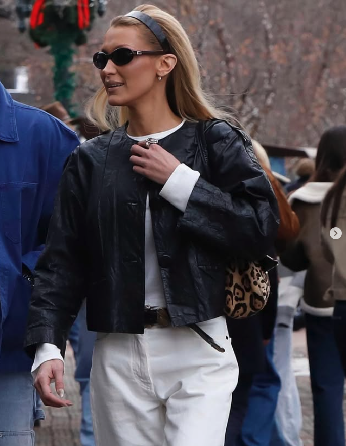
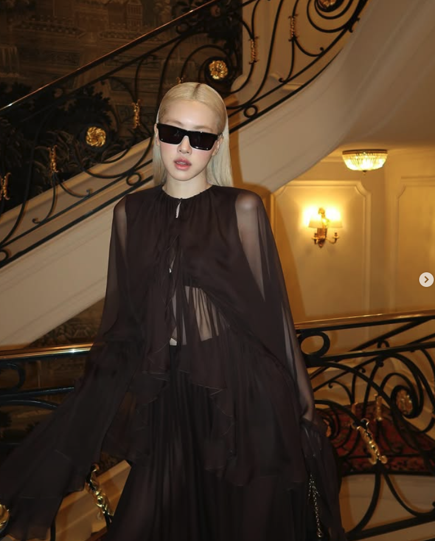
3. The place where you live represents youAlthough I’m a fan of cleanliness and minimalism, the beige living rooms copy-pasted from Pinterest are, at best, uninspiring. The feeling you should be aiming for is that moment when you walk into someone’s home and instantly think, “This feels like them.”
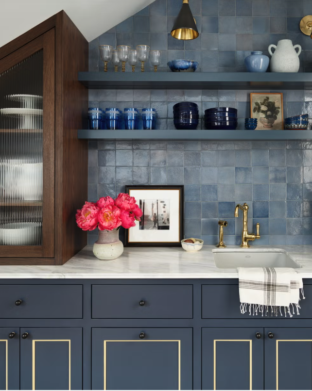
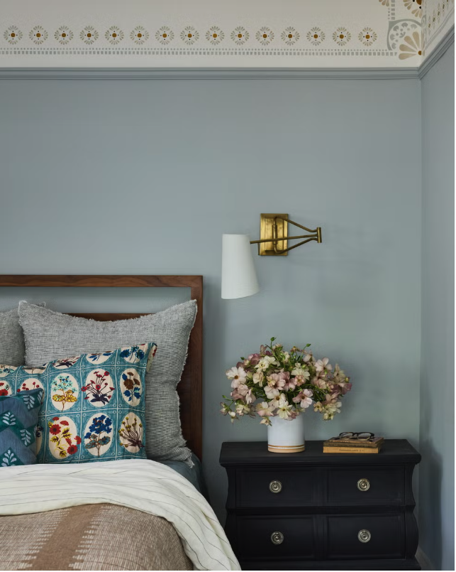
4. A good pair of jeansIt may sound trivial, but a perfect pair of jeans can save you in countless situations. They can look effortlessly chic in a casual outfit, yet just as polished when paired with mules and a classic white shirt. In the end, it’s all in the accessories.


Recently mentioned, an extravagant and unique jewel, perhaps passed down from generation to generation, outlines a special style, more difficult to find.
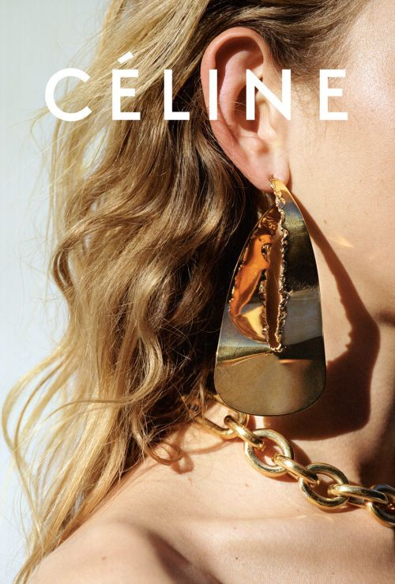
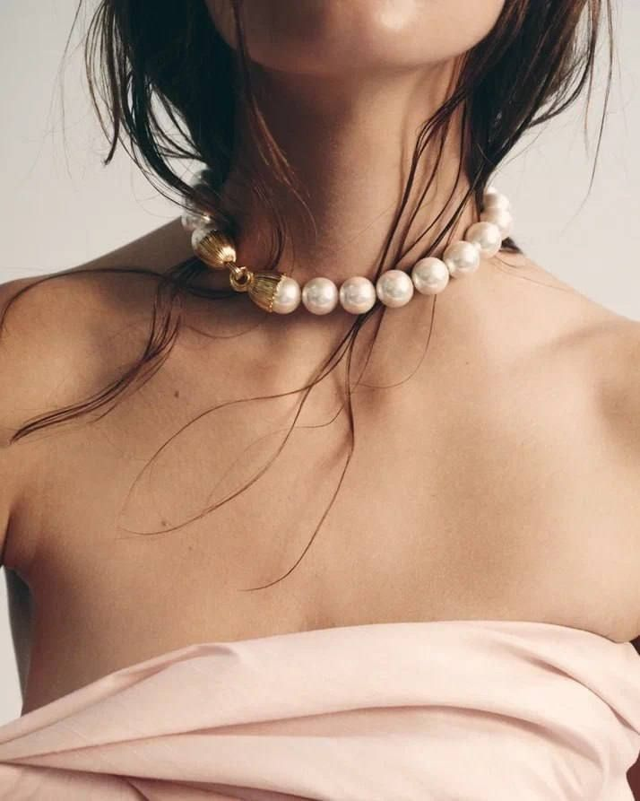
6. The right haircutWe’ve moved beyond the era when everything revolved solely around clothes — when appearance, and especially the haircut, seemed to define it all. From a sleek elongated bob to soft, loose curls, a well-chosen hairstyle has the power to enhance the lines of the face and highlight its most distinctive features.
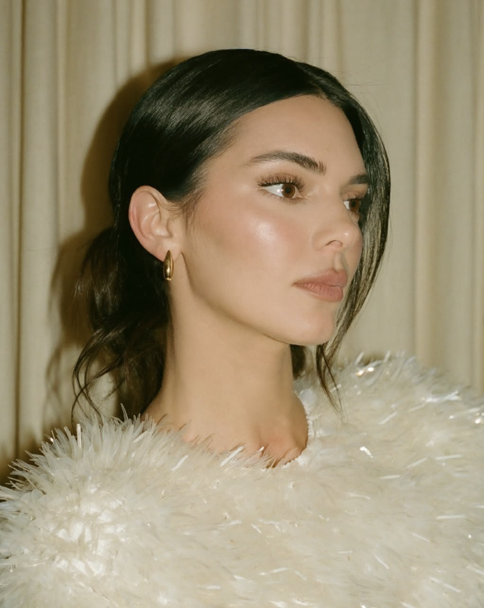
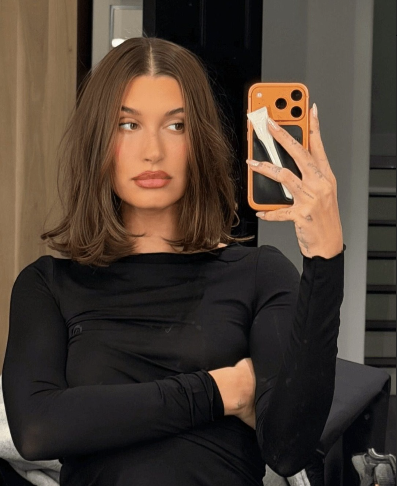
7. Having a catch allA catch-all is a functional decorative object, usually placed near the entrance of a home, on a bedside table, or in the hallway. It serves as a temporary resting place for small, frequently used items — keys, coins, glasses, jewelry, and the like. Personally, I highly recommend ceramic ones.
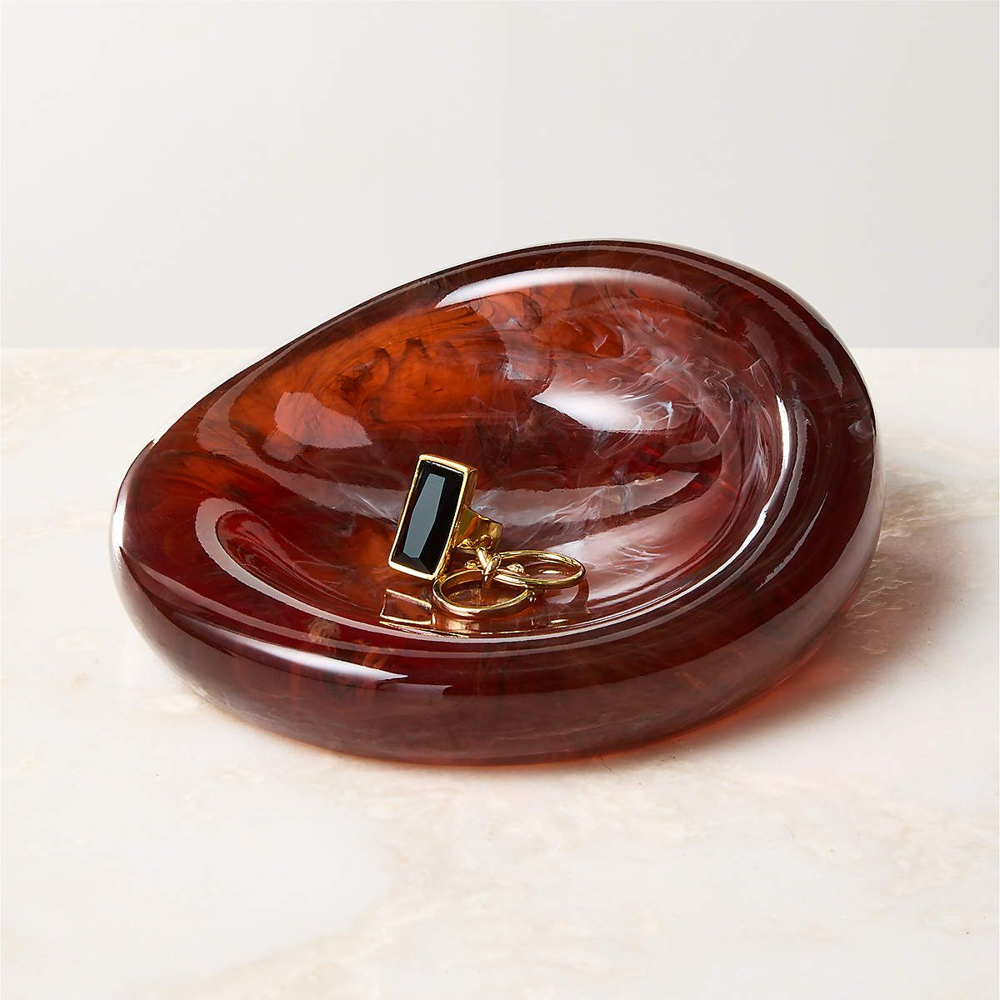
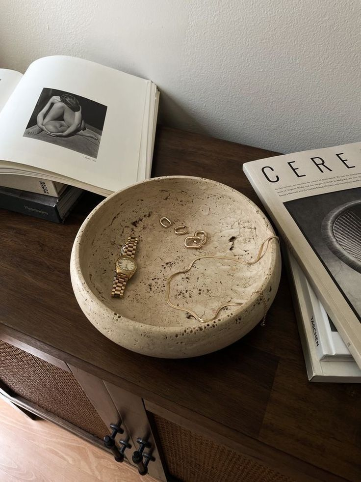
8. Signature scentOlfactory sensations leave an impression, whether we intend them to or not. A mysterious, signature perfume is incredibly chic — it can lift you out of anonymity and make you memorable, much like Rihanna. People are captivated by the chance to “smell” her. It is widely speculated that she wears her own creation: Fenty Eau de Parfum.
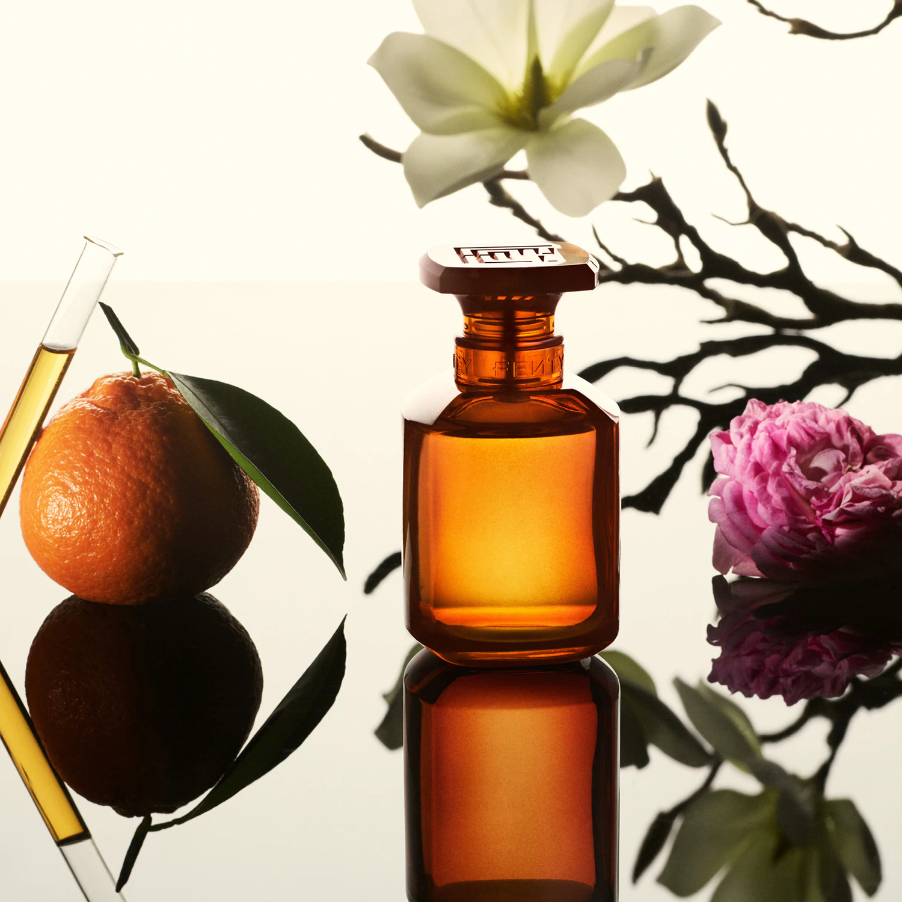
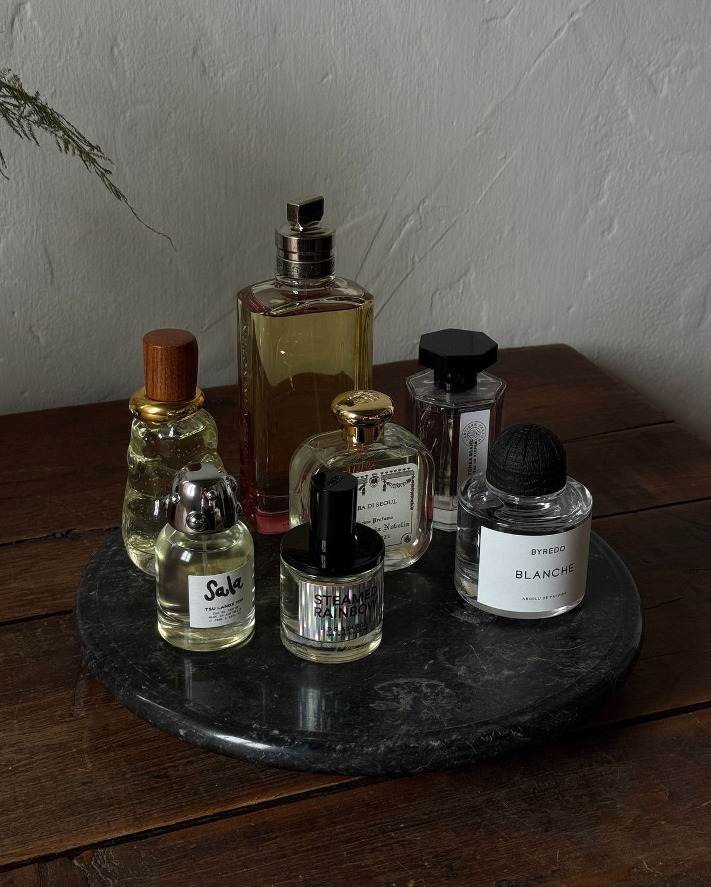
9. Red lipsThe power of red lips is well known — and effortlessly harnessed — by French women. It’s surprisingly easy to master. The secret lies in keeping the rest of the makeup natural, avoiding heavy eye emphasis, and finding the perfect shade of red. Mine is: Kiko Milano Jelly Stylo 509.
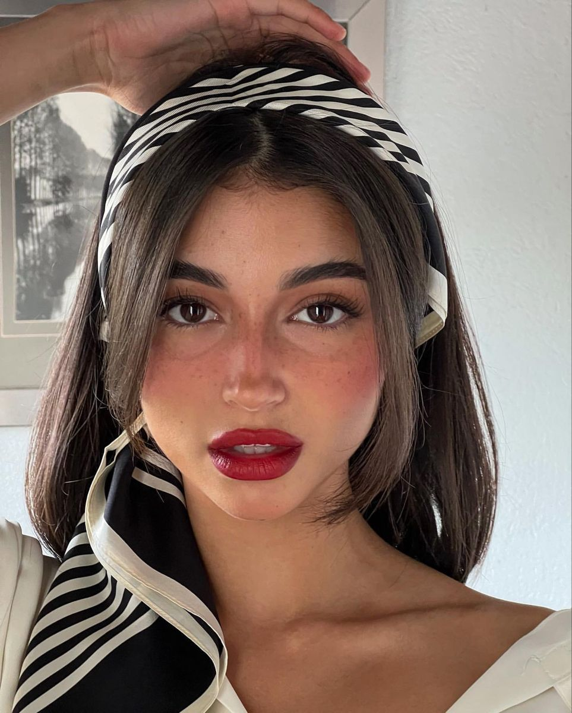
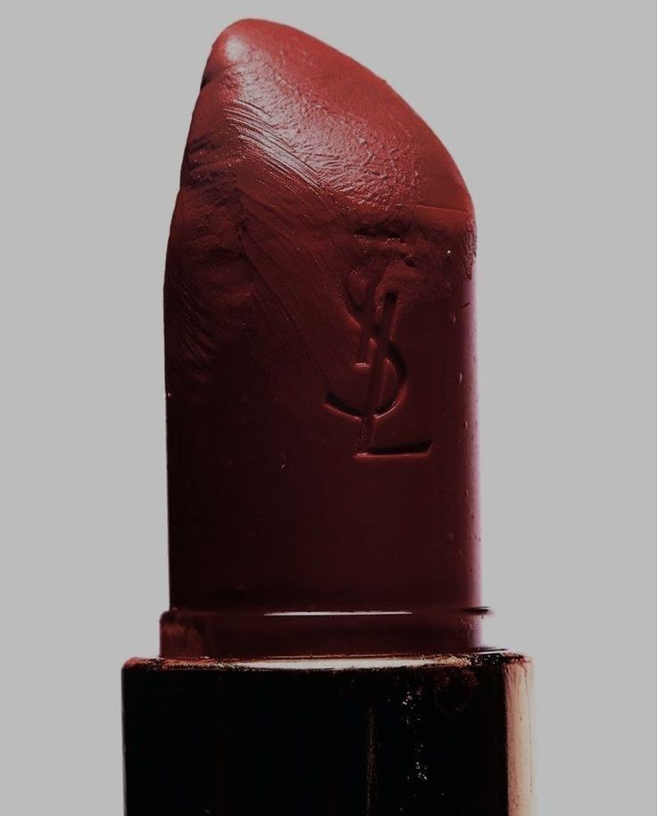
10. Aging gracefullyPerhaps it is the ultimate affliction of women to relentlessly chase perfection and youth. Yet, the white hairs and the wrinkles around the mouth each tell a story. While Botox and fillers can smooth out discomforts or perceived flaws, we should embrace aging with pride, cherishing every smile revealed behind a wrinkle.
-AE